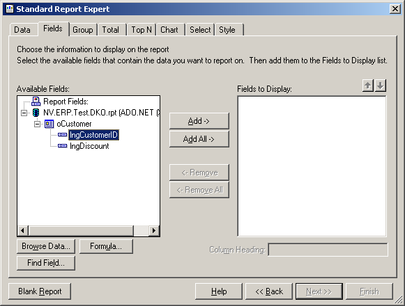

Report Document Type
Report Document Types stellen die Verbindung zwischen den Components und den Reports dar. Sie definieren, was für Daten in welchem Report ausgegeben werden. Ein Report Document Type enthält eine Angabe, welche Components ausgedruckt werden sollen und welche Reports dafür zur Verfügung stehen. Diese Report Document Types können später in Forms verwendet werden.
Report Document Types sind an dem  – Icon zu erkennen.
– Icon zu erkennen.
Erstellen, bearbeiten und löschen von Report Document Types
Sie erstellen einen neuen Report Document Type, indem Sie in der Registerkarte Namespaces den Namespace auswählen, in welchem der Report Document Type abgelegt werden soll.
Mit dem Button  (New) und dem Eintrag ReportDocumentType aus dem Menü wird im markierten Namespace ein neuer Report Document Type angelegt.
Dieser wird auch gleichzeitig geöffnet.
Direkt nach dem Anlegen des Report Document Types steht der Cursor in dem sich öffnenden Designer auf dem Feld Name, wo Sie den Namen eingeben können.
(New) und dem Eintrag ReportDocumentType aus dem Menü wird im markierten Namespace ein neuer Report Document Type angelegt.
Dieser wird auch gleichzeitig geöffnet.
Direkt nach dem Anlegen des Report Document Types steht der Cursor in dem sich öffnenden Designer auf dem Feld Name, wo Sie den Namen eingeben können.
Es wird empfohlen den Namen mit rpt zu beginnen.
Löschen können Sie einen Report Document Type mit dem Button  (Delete).
Sie müssen dazu den gewünschten Report Document Type im Namespace-Baum markiert haben.
Es gibt auch im Kontext-Menü den Eintrag Delete.
Der Löschvorgang wird erst im Repository wirksam, wenn Sie den Button
(Delete).
Sie müssen dazu den gewünschten Report Document Type im Namespace-Baum markiert haben.
Es gibt auch im Kontext-Menü den Eintrag Delete.
Der Löschvorgang wird erst im Repository wirksam, wenn Sie den Button  (Save All) drücken.
(Save All) drücken.
Registerkarte DataSource
Unter Datasource werden die Components angegeben, die in einem Report ausgegeben werden sollen. Es können mehrere Components (Collections) aus unterschiedlichen Namespaces eingebunden werden.
Jede Component wiederum kann für mehrere Reports als Datasource angegeben werden.

Mit dem Button Add wird ein neuer Eintrag in der Liste erstellt. In der Combobox Datatype können Sie angeben, welche Component / Collection verwendet werden soll. Im Feld Name können Sie dem Eintrag einen Namen geben. Dieser wird anhand des ausgewählten Datentyps mit einem Standardnamen vorbelegt.
Diese Einträge sind sozusagen die Properties des Reports. Diese Properties müssen später beim Druck mit Werten gefüllt werden.
Wenn Sie Components oder Collections eingebunden haben, können Sie diese aufklappen und die Properties der Component / Collection werden angeboten. Sind diese Properties ebenfalls Components, können diese erneut aufgeklappt werden, etc.
XSD-Datei
Warning
Dieses Kapitel ist nur für Crystal Reports relevant. DevExpress® XtraReports™ bindet direkt an die Objekte der Datenquelle, weshalb keine Umwege über die XSD gefahren werden.
Am nun aufgeklappten Baum kann angegeben werden, welche Properties und Komponenten in die XSD-Datei aufgenommen werden sollen. Dazu müssen Sie die Checkbox an dem entsprechenden Eintrag setzen.
Note
Ein DevExpress® Report hat immer Zugriff auf alle Komponenten am Report Document Type und dessen Properties, ob die Checkbox im Einzelfall aktiviert ist oder nicht. Hierzu wird in jede verwendete Component ein 'KomponentenName_Rptx'-Interface generiert.
Aus diesen Daten wird eine XSD-Datei (XML-Definition) erstellt. Diese XSD-Datei kann einem Crystal-Report zugewiesen werden. So versteht der Report die Daten, die ihm übergeben werden. Mit jedem Klick im Baum wird die XSD-Datei neu erzeugt. Sie wird im Report-Pfad der aktuellen Applikation abgelegt. Der Name setzt sich folgendermaßen zusammen: Namespaces.rptXXX.xsd.
Zum Einstellen des Pfades siehe Kapitel Code-Builder / Applications (Application).
Beim Druck werden die kompletten Components / Collections an den Report Document Type übergeben. Es werden aber nur die ausgewählten Daten in die XSD weitergegeben. Umso größer die Listen, desto wichtiger für die Performance ist es, dass nur die Daten übergeben werden, die wirklich benötigt werden.
Crystal Reports nutzt die übergebene XSD-Datei eigenständig, um den Report mit Daten zu füllen.
Registerkarte Report Files
Auf der Registerkarte Report Files können dem Report Document Type die eigentlichen Reports zugewiesen werden. Jeder Report kann entweder als CrystalReport, als DevExpress® oder auf beide Arten angelegt werden. Da also ein Parallelbetrieb von Crystal und DevExpress® Reports möglich ist, existieren zwei Sets von Buttons, um mit den Dateien umzugehen.

Hinzufügen und Öffnen eines neuen Reports
Einen neuen Report fügen Sie beispielsweise über das Kontextmenü der Tabelle hinzu, in der die Reports angezeigt werden.

Um z.B. die DevExpress®-Version der Rechnung zu bearbeiten, markieren Sie den Eintrag
‚Invoice‘ und betätigen den Button Edit Report in der Kategorie DevExpress®.
Für weitere Erklärungen bezüglich der Bearbeitung von DevExpress® Reports siehe FS Report Designer
Include Base Reports
Mit der Checkbox Include Base Reports legen Sie fest, ob vererbte, nicht geänderte Basisreports später in der Applikation zur Auswahl stehen sollen. Sie hat Einfluss darauf, was die Methode ReportDocument.GetReportEnums() zurückgibt.
Allgemeine Einstellungen
Die folgenden Einstellungen beziehen sich auf den in der Tabelle ausgewählten Report:
Im Feld Name kann dem Report ein Name gegeben werden.
Warning
Dieser Name darf keine Leer- und Sonderzeichen enthalten, weil dieser später im Code zum Einsatz kommt.
Mit dem Button Edit Report wird der Report über ein externes Tool bearbeitet.
Warning
Zum Erstellen und Editieren von Crystal Reports benötigen Sie einen Crystal Reports Designer oder Visual Studio.
Der Button Choose File öffnet einen Dateiauswahl-Dialog, in dem Sie eine bestehende Report-Datei zuweisen können.
Mit dem Button New Report wird ein neuer, leerer Report erstellt und zugewiesen.
Mit dem Button Reset File wird eine einzelne Report-Datei aus einem Report gelöscht. Der Eintrag im Report Document Type und die etwaige andere Report-Datei im selben Eintrag bleiben hierbei unverändert bestehen.
Caption
Im Report Document Type können Sie für Crystal Reports lokalisierte Bezeichnungen (Captions) hinterlegen, also die Bezeichnung mehrsprachig pflegen. Diese Captions können zur Laufzeit ausgewertet werden, um z.B. im Druck-Dialog bei der Auswahl der unterschiedlichen Report-Varianten einen sprechenden Text auszugeben.
Report-Verzeichnis
Auf dem Dateisystem werden die Crystal Report-Dateien mit ihren .xsd-Dateien zusammen vom Compile-Verzeichnis ausgehend im Ordner /Report/ gespeichert. DevExpress® Reports erhalten einen weiteren Unterordner, nach dem übergeordneten Report Document Type benannt. Der Report CustomerList aus rptCustomerList wäre also unter /Report/NV.ERP.Base.Customer.rptCustomerList/CustomerList.repx zu finden. Da DevExpress® Reports keine .xsd-Dateien benötigen, befinden sich in den Unterordnern ausschließlich die .repx-Dateien.
Bei jedem Compile-Vorgang werden Crystal und DevExpress® Report-Dateien aus dem Repository in das Dateisystem herausgeschrieben, nach folgenden Regeln:
Crystal
Alle Crystal Reports aller Report Document Types werden in den /Report/-Ordner geschrieben, inklusive Basis-Reports.
DevExpress®
Alle DevExpress® Reports eines Report Document Types im aktuellen Package werden in den entsprechenden Unterordner unter /Report/ herausgeschrieben.
Basis-Reports werden nur aus der Basis gesucht und ins Verzeichnis geschrieben, solange am Report Document Type die Checkbox "Include Base Reports" gesetzt ist.
Crystal Report mit Visual Studio erstellen
Öffnen Sie Visual Studio.
Legen Sie jetzt ein neues Projekt an (Visual C# Project / leeres Projekt oder empty Project) oder öffnen Sie ein bereits vorhandenes Projekt.
Es empfiehlt sich, ein Projekt zur Erstellung und Pflege von Reports anzulegen und dieses immer wieder zu verwenden.

Crystal Report auswählen und Open drücken.
Es öffnet sich ein Wizard zum Erstellen eines Crystal Reports.
Crystal Report Gallery:

Auf OK drücken.
Standard Report Expert Registerkarte Data:

In diesem Fenster wählen Sie den Eintrag Database Files aus. Es öffnet sich ein Datei-Auswahl-Dialog. Hier wählen Sie die von Framework Studio generierte XSD-Datei aus. Diese Datei befindet sich in dem Report Directory, der in Applications angegeben wurde.
Unter Database Files wird die XSD-Datei und darunter die darin enthaltenen Tabellen angezeigt. Jede im Report Document Type eingebundene Component wird als eine Tabelle angeboten und bekommt den Namen, den Sie angegeben haben. Ist in einer Component eine andere Component enthalten und wurde diese ebenfalls ausgewählt, wird diese als eigenständige Tabelle angeboten.
Sie können nun die gewünschten Tabellen mit einem Doppelklick auswählen. Sie werden dann in die rechte Listbox eingetragen.
Mit Next öffnet sich die Registerkarte, in dem Sie die Felder auswählen können, die der Report anzeigen soll.

Wählen Sie die gewünschten Felder mit Doppelklick oder Add aus. Mit den Pfeilen über der Liste, mit den ausgewählten Feldern, können Sie noch die Reihenfolge der Felder ändern.
Mit Next öffnen sich weitere Fenster, in denen Sie Gruppierungen, Summen, Layouts und weitere Einstellungen vornehmen können.
Mit Finish wird der Report erzeugt.
Crystal Report mit Visual Studio aktualisieren
Wenn Sie in DataSource Components oder Properties hinzufügen oder entfernen, ändert sich die Schnittstelle zum Report und somit auch die XSD-Datei. Dann ist es notwendig, dass diese Änderung dem Report mitgeteilt wird.
Dazu öffnen Sie wieder Visual Studio, legen ein leeres Projekt an oder öffnen Ihr Crystal-Reports-Projekt. Am besten fügen Sie zum Projekt den Report aus dem Report-Verzeichnis von Framework Studio hinzu. (Menu Project / Add Existing Item)
Warning
Achtung: als Dateityp geben Sie Crystal Reports an.
Rufen Sie im Field-Explorer bei Database Fields Verify Database auf.
Project2 – Microsoft Visual C#.NET [design] – Customer1.rpt

Wenn die XSD-Dateien nicht gefunden werden, fragt Visual Studio nach, wo diese zu finden sind.
Es werden jetzt die neuen Felder hinzugefügt und die entfernten Felder gelöscht. Das Löschen kann ggf. zu Fehlermeldungen führen.
Wenn Sie neue Components eingebunden haben, können diese mit dem Befehl Add/Remove Database manuell hinzugefügt werden.
Für den Druck relevante Klassen
Browserbasierter Report-Designer zur Laufzeit
Zur Laufzeit steht ein Report Designer dem Benutzer zur Verfügung. Dieser muss vorher in das System integriert und aufgerufen werden. Im folgenden Beispiel wird ein Report Designer geöffnet, auf eine Bestätigung des Benutzers gewartet und anschließend der geänderte Report ausgedruckt.
Warning
Diese Funktionalität steht noch nicht vollständig zur Verfügung.
// Eigenschaft, um sich die Design Session zu merken
private FrameworkSystems.FrameworkBase.Reporting.ReportDesignSession oDesignSession { get; set; }
// Einstiegspunkt; hier bspw. über einen Button Click
protected virtual void btnGrdReportDesigner_OnClick(FrameworkButtonClickEventArgs e)
{
rptArticles report = new rptArticles(this.Global, rptArticles.Reports.XArticleReport, ExportFormat.PDF);
this.oDesignSession = report.CreateDesigner();
this.oDesignSession.ShowDesigner(); // Öffnet den Report Designer in einem Browser-Fenster
MsgBox.Show(FSGeneral.ctMessagesFactory.GetText(this.Global, 10), "", MsgBoxButtons.OK, MsgBoxIcons.None, new MsgBoxEventHandler(OnMsgBoxReportDesignSessionClick));
}
// Ein Klick auf den MessageBox-Button signalisiert, dass die Bearbeitung abgeschlossen ist
protected virtual void OnMsgBoxReportDesignSessionClick(object sender, MsgBoxEventArgs e)
{
byte[] reportDesign = null;
if (this.oDesignSession != null && this.oDesignSession.IsModified())
{
// Veränderten Report aus der Session herunterladen
reportDesign = this.oDesignSession.GetBytes();
}
this.oDesignSession.Dispose(); // Verwerfen der Design Session nicht vergessen
this.oDesignSession = null;
if (reportDesign == null)
{
throw new Exception("Kein neuer Report vorhanden.");
}
// Drucken des geänderten Reports
rptArticles report = new rptArticles(this.Global, rptArticles.Reports.XArticleReport, ExportFormat.PDF);
report.SelectedReport.ReportBytes = reportDesign;
report.oArticle = oArticleColl; // Beim Drucken wird die Datenquelle benötigt
report.Print();
}
Weitere Information zum Web-Designer finden Sie unter ReportDesignSession.